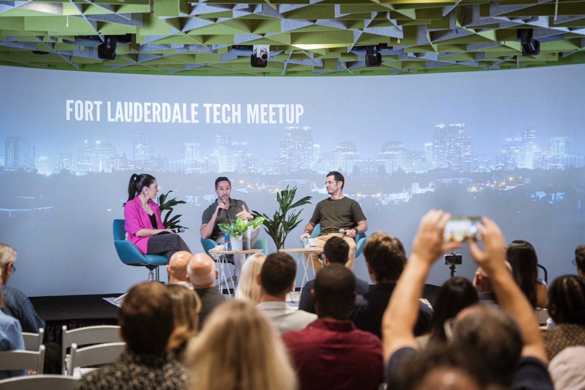
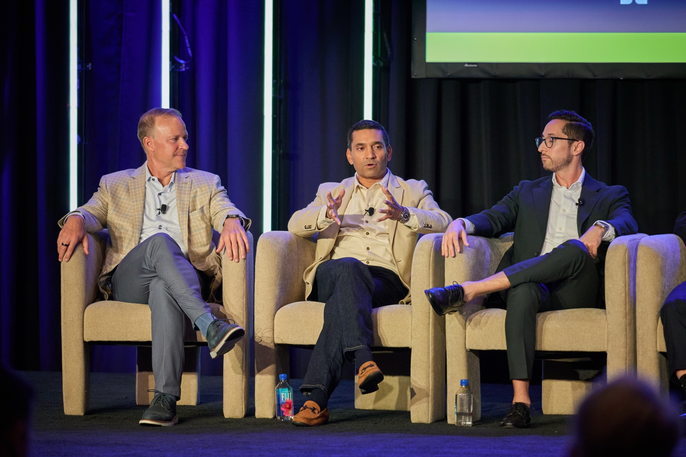
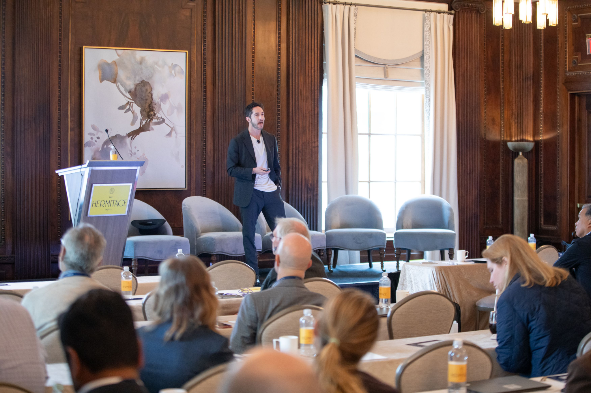
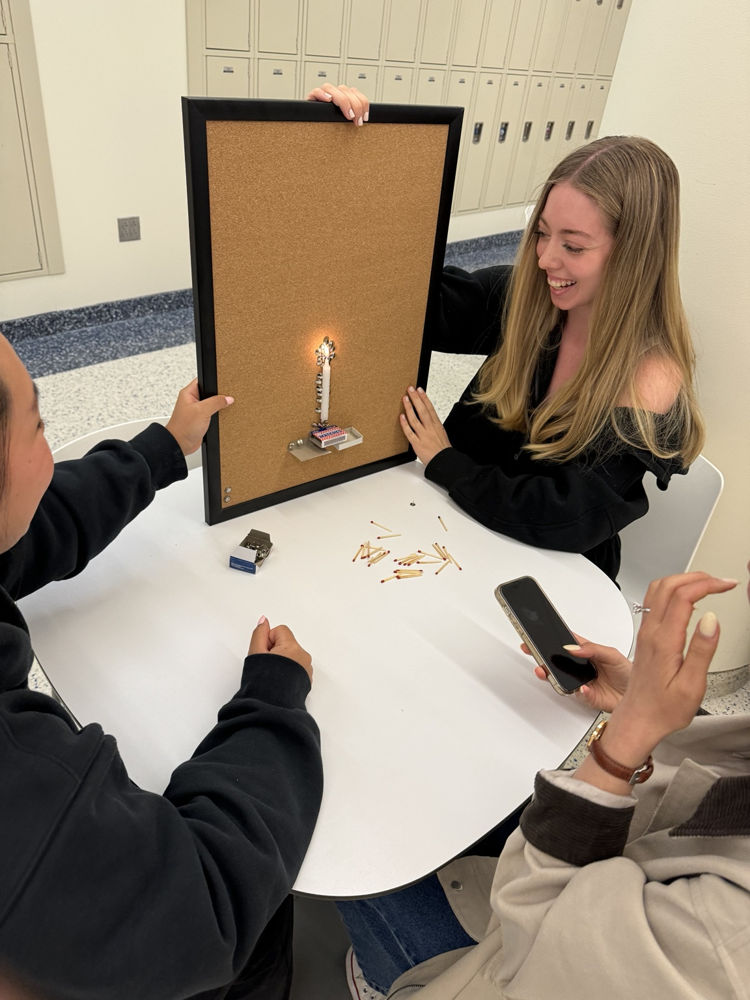

PodcastJul 7, 2026
Culture & Leadership for Startups
A live conversation with David Bitton and Julia Lucidi about hiring, candid feedback, organizational culture, and helping teams build with AI.
If you say enough things, eventually you'll be right
Things I've written. Conversations I've joined.
Occasionally, someone even hands me a microphone.

12 items
A live conversation with David Bitton and Julia Lucidi about hiring, candid feedback, organizational culture, and helping teams build with AI.
Joining Taylor Trusty and Flaviu Simihaian to talk about scaling culture, building Bluetree, and services versus product businesses in healthcare.

A conversation about building a company with purpose and why culture matters, recorded during my time at Bluetree.
Joining a panel hosted by Misfit Labs and The LAB Miami in Wynwood to explore practical AI adoption in healthcare, including patient access, health-system operations, and the path from emerging technology to real-world implementation.

Joining fellow healthcare leaders on stage at McDermott HealthEx in Nashville, May 20-21, 2026.

Speaking at Health Velocity Capital's annual meeting in Nashville.

Joining the speaker lineup at the AI Agent Conference in New York City, May 6-7, 2025.
.jpg)
A speaking appearance with the Kinetik leadership team.

Teaching at Columbia's School of Public Health in April 2024.
A perspective on learning by doing.
Looking beyond healthcare for lessons in better access.

A portfolio milestone from Andium.
Try another category or clear your search.
Keep the conversation going